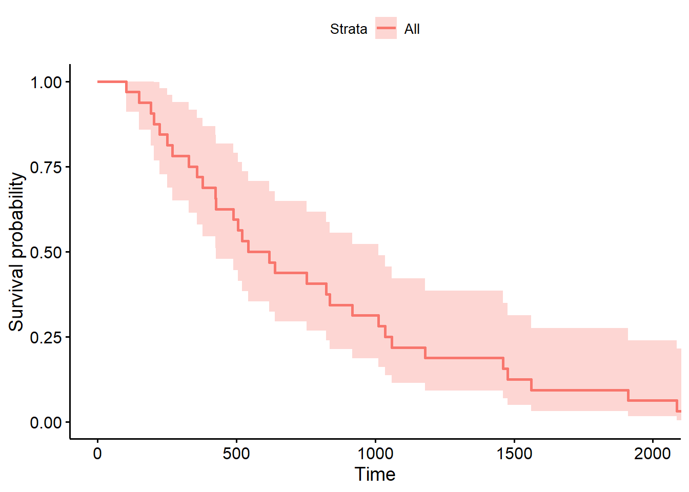

This is my analysis for This Question on Good Judgement Open.
Wikipedia has already assembled the list of Chiefs of Staff. All we needed to do was compile it into a slightly cleaner format.
library(readr)
library(dplyr)
library(DT)
CoS <- read_csv('https://docs.google.com/spreadsheets/d/e/2PACX-1vRlBabaJaIBmcqvF4QR4uF2megpcCpffX6doQbJaVWq8fMcfmW_iIdqs7iuYvi6LrtJkG5XjXnrybdg/pub?gid=174141588&single=true&output=csv')
CoS %>%
select(Name, President, EnteredOffice, LeftOffice, TimeInOffice) %>%
arrange(desc(EnteredOffice)) %>%
datatable()There are two cases in which the office was vacant: once briefly under Richard Nixon, and for the first 2.5 years of the Carter Administration. It seems like those periods are fundamentally different phenomena than having a Chief of Staff, so we’ll just drop them.
To compute how long a (any) Chief of Staff’s tenure will be, let’s fit a survival curve!
library(survival)
library(survminer)
curve <- survfit(Surv(TimeInOffice) ~ 1, data=filtered)
window <- summary(curve, times=364)
ggsurvplot(curve)
Now, since Mulvaney started on 2019-01-02, he’ll need to be in his position 364 days to resolve the question as “No”. The model suggests that he’ll have a 364-day survival probability of 0.71875, and thus we predict that he’ll be gone with probability 0.28125
If we condition his survival on the amount of time he’s already made it, our estimate should go up. After all, each additional day constitutes additional Bayesian evidence that he will continue to survive.
#remotes::install_github("zabore/condsurv")
library(condsurv)
csp <- conditional_surv_est(
basekm = curve,
t1 = as.integer(difftime(Sys.time(), as.POSIXct('2019-01-02', tz="UTC"), units="days")),
t2 = 364
)$cs_est
csp## [1] 0.92By this perspective, he’s 92% likely to last through the end of the year, or 8% likely to leave.
(as of 2019-11-04)
…suggests we shouldn’t be so confident about his longevity:
2019-10-22 Fox News says his job is in jeopardy
Fox News says he’s leaving strongly suggests that he’s leaving, even if its just speculation from Fox News. After all, that’s the President’s news service of choice. Strong update toward Mulvaney leaving.
2019-10-23 President Trump Denies Rumors about replacement plans
Very weak update toward Mulvaney leaving. Trump is an inveterate liar, so much so that you’re more likely to match a fact by assuming the thing he says is false.
2019-10-24 Conservatives express support for Mulvaney
Mulvaney has powerful Friends that Trump wants to keep happy, weakly updating us towards Mulvaney staying on.
2019-11-01 Mulvaney was left in the dark on al-Baghdadi operation
You don’t exclude your Chief of Staff from a Major National Security Operation unless he isn’t your Chief of Staff anymore. Strong update towards a Firing.
2019-11-01 Trump refuses to defend Mick Mulvaney, heightening indications chief of staff on the way out
This one is a tough mix. Trump is often outspoken, both in his defenses of allies and attacks on former allies. So reticence to comment is an ambiguous signal for both interpretations. Speculation beyond this is tantamount to conspiracy theorizing… But let’s just do it anyway. I think Trump is relying on Mulvaney and his network to provide some legal protection in the impeachment investigation, and the consequences of the firing will be more dire than the consequences of just pretending he doesn’t have a Chief of Staff. If this sounds familiar, it was vaguely similar to Trump’s relationship with Robert Mueller, with an important caveat: Mulvaney comes from Trump’s camp, where Mueller was foisted upon Trump. Hence why Trump won’t comment on Mulvaney, where he routinely and publicly called for Mueller to stop investigating.
Speculation aside, the ambiguity of this evidence means we shouldn’t update either direction based on this information.